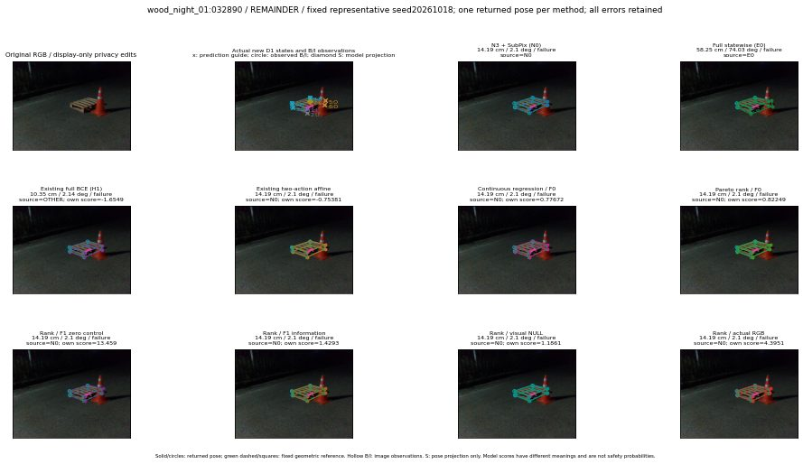

실선은 반환 자세, 초록 점선은 고정 기하 참조입니다. S는 영상 관측이 아닙니다. 점수는 모델별 의미가 다르며 보정된 안전 확률이 아닙니다. 개인정보 처리는 표시 사본에만 적용했습니다.
| 방법·seed | 위치 / 회전 / 공동성공 | 실제 출처 | 선택 후보 | 각 모델 자체 점수 |
|---|---|---|---|---|
| N0 | 14.19 cm / 2.1 deg / failure | N0 | N/A | N/A |
| E0 | 58.25 cm / 74.03 deg / failure | E0 | N/A | N/A |
| E0_REGENERATED | 58.25 cm / 74.03 deg / failure | E0 | E0_REGENERATED | N/A |
| POSEFIX_SUBPIX_PF_ANCHOR | 12.13 cm / 1.5 deg / failure | OTHER | N/A | N/A |
| POSEFIX_SUBPIX_YOLO_ANCHOR | 12.13 cm / 1.5 deg / failure | OTHER | N/A | N/A |
| D1_H1_MLP_s20261018 | 10.35 cm / 2.14 deg / failure | OTHER | WD0/ORIGINAL_WD/selected | -1.654896855354309 |
| D1_H1_MLP_s20261019 | 10.35 cm / 2.14 deg / failure | OTHER | WD0/ORIGINAL_WD/selected | -2.0658576488494873 |
| D1_H1_MLP_s20261020 | 14.19 cm / 2.1 deg / failure | N0 | N0 | -1.7061737775802612 |
| D1_H1_PAIR_MLP_s20261018 | 14.19 cm / 2.1 deg / failure | N0 | N0 | -1.8994041681289673 |
| D1_H1_PAIR_MLP_s20261019 | 14.19 cm / 2.1 deg / failure | N0 | N0 | -1.9738335609436035 |
| D1_H1_PAIR_MLP_s20261020 | 14.19 cm / 2.1 deg / failure | N0 | N0 | -2.3818552494049072 |
| D1_H1_PAIR_ROLE_AFFINE_s20261018 | 14.19 cm / 2.1 deg / failure | N0 | N0 | -0.753808319568634 |
| D1_H1_PAIR_ROLE_AFFINE_s20261019 | 14.19 cm / 2.1 deg / failure | N0 | N0 | -0.9764156937599182 |
| D1_H1_PAIR_ROLE_AFFINE_s20261020 | 14.19 cm / 2.1 deg / failure | N0 | N0 | -0.5938261151313782 |
| R_CONT_F0_s20261018 | 14.19 cm / 2.1 deg / failure | N0 | N0 | 0.7767162322998047 |
| R_CONT_F0_s20261019 | 14.19 cm / 2.1 deg / failure | N0 | N0 | 0.8828849196434021 |
| R_CONT_F0_s20261020 | 14.19 cm / 2.1 deg / failure | N0 | N0 | 0.7425926327705383 |
| R_ORDER_F0_s20261018 | 14.19 cm / 2.1 deg / failure | N0 | N0 | 0.8224940299987793 |
| R_ORDER_F0_s20261019 | 14.19 cm / 2.1 deg / failure | N0 | N0 | 0.878342866897583 |
| R_ORDER_F0_s20261020 | 14.19 cm / 2.1 deg / failure | N0 | N0 | -0.06804592162370682 |
| R_ORDER_F1_ZERO_s20261018 | 14.19 cm / 2.1 deg / failure | N0 | N0 | 13.459149360656738 |
| R_ORDER_F1_ZERO_s20261019 | 14.19 cm / 2.1 deg / failure | N0 | N0 | 5.7377777099609375 |
| R_ORDER_F1_ZERO_s20261020 | 14.19 cm / 2.1 deg / failure | N0 | N0 | 6.014467239379883 |
| R_ORDER_F1_s20261018 | 14.19 cm / 2.1 deg / failure | N0 | N0 | 1.4293057918548584 |
| R_ORDER_F1_s20261019 | 14.19 cm / 2.1 deg / failure | N0 | N0 | 5.324392318725586 |
| R_ORDER_F1_s20261020 | 14.19 cm / 2.1 deg / failure | N0 | N0 | 0.06997443735599518 |
| V_ORDER_NULL_s20261018 | 14.19 cm / 2.1 deg / failure | N0 | N0 | 1.186059594154358 |
| V_ORDER_NULL_s20261019 | 14.19 cm / 2.1 deg / failure | N0 | N0 | 0.8769055008888245 |
| V_ORDER_NULL_s20261020 | 14.19 cm / 2.1 deg / failure | N0 | N0 | 2.2281506061553955 |
| V_ORDER_RGB_s20261018 | 14.19 cm / 2.1 deg / failure | N0 | N0 | 4.3951311111450195 |
| V_ORDER_RGB_s20261019 | 14.19 cm / 2.1 deg / failure | N0 | N0 | 0.15745069086551666 |
| V_ORDER_RGB_s20261020 | 14.19 cm / 2.1 deg / failure | N0 | N0 | -8.800215721130371 |